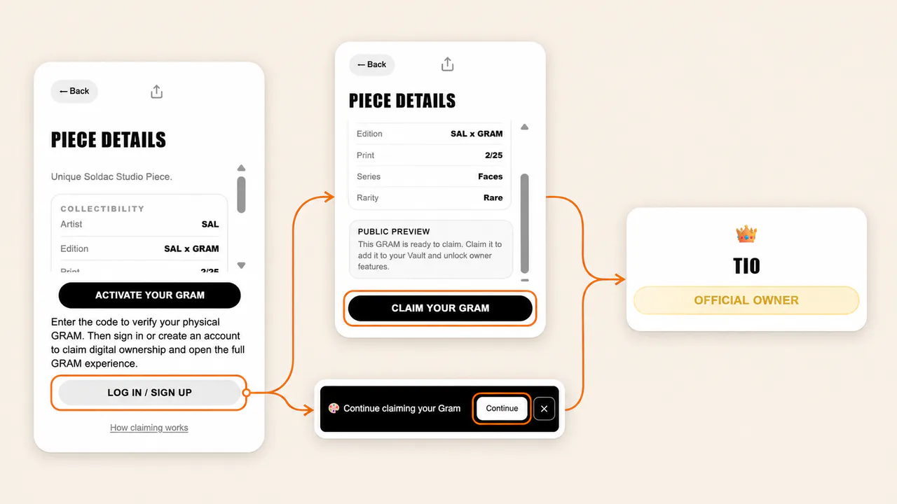

Claiming & Ownership
How to claim your Gram, what “Collected” means, and what to do if login redirects you away.
What “claiming” means
Claiming connects a physical Gram to your account so it appears in My Collection. Each Gram can be claimed once.
Before you start
- If tapping does not work, make sure your phone supports NFC and that NFC is enabled, or scan the QR instead.
- You’ll need a customer account to claim (login is sometimes required).
- Use the physical Gram — screenshots won’t work.

How to claim (step-by-step)
- Tap the physical GRAM with your phone.
- Wait for the Gram page to load (you may see a short loader).
- Flip to details and look for:
- “Claim Piece” if you’re already logged in, or
- “Login to Claim” if you’re not logged in.
- If you see Login to Claim, tap it and login.
- After login, return to the Gram page and tap Claim Piece.
- You’ll see a confirmation moment and the Gram will become Official Owner.


What you might see (and what it means)
“Official Owner 🧡”
You successfully claimed this Gram. It should now appear in My Collection.
“Collected”
This Gram has already been claimed by someone. You can still view the page, but you won’t be able to claim it.
No claim button appears
This usually means the Gram is already collected, or the page didn’t finish loading your login state. Jump to Troubleshooting.

Login redirects & the “Continue claiming” banner
Sometimes, after login, you may land somewhere else (for example an account page) instead of returning directly to the Gram. That’s okay — the system remembers what you were trying to claim.
- After logging in, go back to the storefront (home page).
- Look for a banner like “Continue claiming your Gram”.
- Tap it to return to the correct Gram page and finish claiming.

If claiming fails
If you tapped Claim Piece and nothing happened (or you got an error), try this:
- Refresh the page once.
- Ensure you’re logged in.
- Tap the physical GRAM again.
- If it still fails, see Troubleshooting.